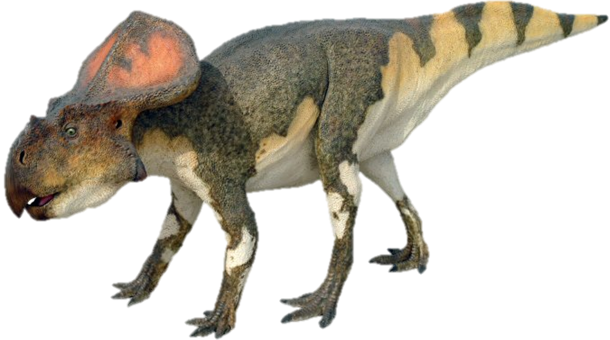
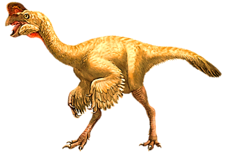
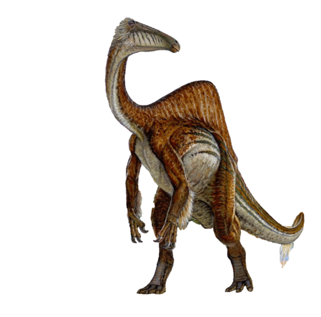
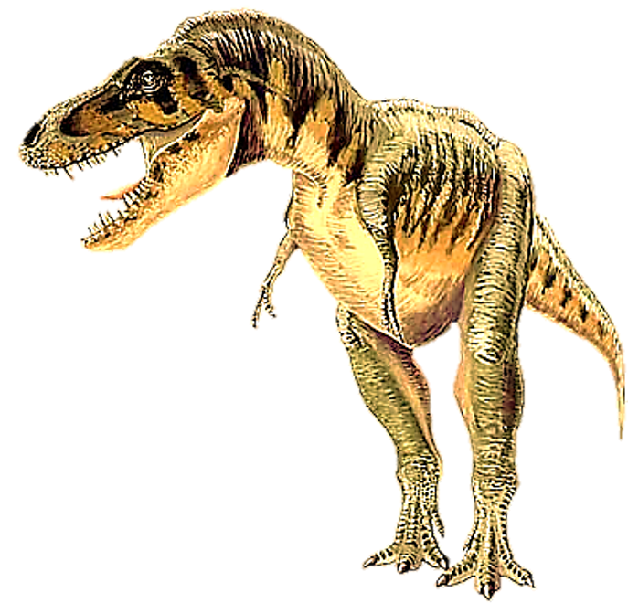

Dinosaurs that lived in Deserts
Deserts present a harsh ecological challenge to all forms of life, and dinosaurs were no exception. The most famous desert of the Mesozoic Era was the Gobi Desert of Central Asia as it was inhabited by some familiar dinosaurs. This will tell you about some dinosaurs which lived in the Gobi desert.
1. Velociraptor

Velociraptor means "Speedy Thief". It lived in the Late Cretaceous Period. It measured 6 ft and 91/2 in long, 1 ft and 71/2 in tall and weighed 431/2 lbs. It was a bipedal carnivore. It can run 40 km/h. Its hind legs had 3 claws and one among them was 21/2 in long and was used as a deadly weapon to stab its prey and wait for it to bleed to death. They hunted in packs, so they can hunt large herbivores. Their feathers were for regulating body temperature and for display.
2. Protoceratops
Protoceratops means "First Horned Face". It lived in the Late Cretaceous Period. It measured 5.9 ft long, 2 ft tall and weighed 182 lbs. It lived in herds. It was a quadrupedal herbivore. Its muscular jaws were capable for a powerful bite. It had a large skull. The size and shape of the frill varied by individual. The frill was used for display and protection of the neck.
3. Oviraptor
Oviraptor means "Egg Thief". It lived in the Late Cretaceous Period. It measured 5.2 ft long, 4.9 ft tall and weighed 73 to 88 lbs. It was a bipedal omnivore. It was thought to be meant to steal and eat eggs as it was found with eggs in one fossil and got its name. However, later studies have shown that the eggs actually belonged to the Oviraptor. It had no teeth but had a beak to break food. It had feathers for regulating body temperature and display.
4. Deinocheirus
Deinocheirus means "Horrible Hand". It lived in the Late Cretaceous Period. It measured 36 to 39 ft long, 11 to 12 ft tall and weighed 6.4 to 7 tons. It was a bipedal omnivore. It swallowed gastroliths to grind their food. It is one of the dinosaurs whih has the longest limbs of any theropod. It had a sail on its back. It was the prey of the tyrannosaurid, Tarbosaurus.
5. Tarbosaurus
Tarbosaurus means "Alarming Lizard". It lived in the Late Cretaceous Period. It measured 33 to 39 ft long, 20 ft tall and weighed 4 to 5 tons. It was a bipedal carnivore and scavenger. It was the largest predator of the Gobi Desert and was a relative of the well-known T-Rex. It's full name is Tarbosaurus Bataar. It is also called as T-Bataar. It hunted dinosaurs like the Deinocheirus (which we have seen previously).